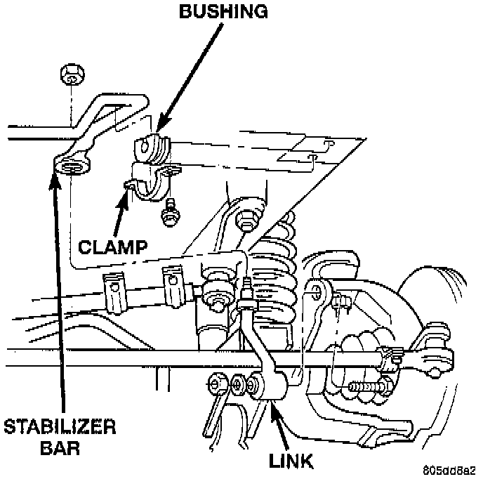

Front

REMOVAL
1. Raise and support the vehicle.
2. Remove upper link nuts and separate links from the stabilizer bar with Remover MB-990635, or equivalent.
3. Remove the stabilizer bar clamps bolts from the frame rails and remove the stabilizer bar.
4. Remove the stabilizer bar link nuts from the axle brackets.
INSTALLATION
1. Position the stabilizer bar on the frame rail and install the clamps and bolts. Ensure the bar is centered with equal spacing on both sides. Tighten the bolts to 54 Nm (40 ft. lbs.).
2. Install the links into the stabilizer bar and axle brackets.
3. Tighten the nuts at the axle bracket end to 95 Nm (70 ft. lbs.).
4. Tighten the stabilizer bar to link nuts to 61 Nm (45 ft. lbs.).
5. Remove the supports and lower the vehicle.
6. Tighten the nuts at the axle bracket end to 95 Nm (70 ft. lbs.).